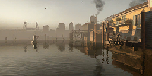
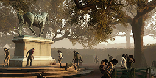
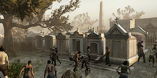
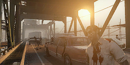

Campaña5
Campaña5
The Parish

Descripción:
the Parish es la campaña final de Left 4 Dead 2 y está ambientada en Nueva Orleans, Luisiana.
La campaña implica viajar desde The Waterfront hasta un punto de evacuación
de helicópteros militares al otro lado de The Bridge.
Al dejar el barco de Virgil en el Waterfront Market, es inmediatamente evidente
que la ciudad ha sido invadida por infectados y que los militares han comenzado a ejecutar
un plan para abandonarla por completo, cubriendo su retirada con bombardeos aéreos.
Imagenes de la campaña:




-Volver a Campañas
-Anterior Campaña